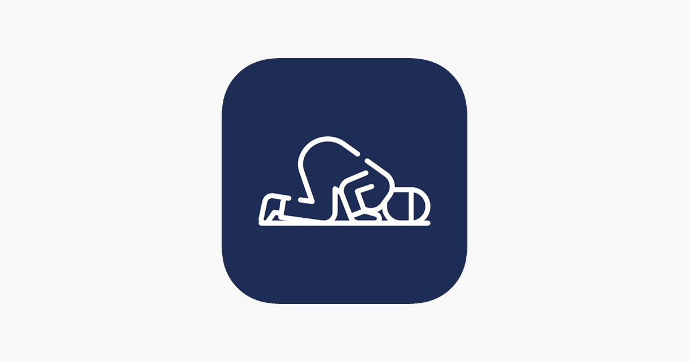

Islamic Education Resources
This page highlights useful tools and platforms for learning about Islam. These apps and websites are beneficial for both Muslims and non‑Muslims who want to learn, practice, or explore Islamic teachings in a structured way.
Recommended Islamic Apps
These apps focus on prayer, Qur’an, and daily Islamic practice.
Pillars Salah
- Tracks your daily prayers and strengthens consistency.
- Shows prayer analytics and streaks to build good habits.
- Helps users complete overdue prayers (Qada’).
- Clean, minimal, and easy-to-use design.

Qada Mate
- Helps track and organize missed prayers (Qada’).
- Allows users to log Qada’ progress over time.
- Provides a structured way to complete past prayers.
- Simple interface focused purely on prayer completion.

Ayah – Qur’an App
- Beautiful Qur’an text with clear Arabic and translations.
- Includes tafsir and multiple recitations.
- Bookmark and note-taking features for study.
- Lightweight and fast, with no ads.
Athan+ (by Masjidal)
- Provides accurate prayer times based on your location.
- Sends notifications for Salah and Iqamah times.
- Connects to nearby masajid using Masjidal data.
- Clear daily prayer timetable interface.

Tarteel – AI Qur’an
- Uses AI to listen to your recitation and find mistakes.
- Helps improve tajwīd and memorization.
- Keeps track of your recitation progress.
- Supports both beginners and advanced students.
Prophetic Sayings
- Contains collections of authentic hadith.
- Daily reminders of short, impactful narrations.
- Organized by topic for quick reference.
- Great for building Islamic knowledge and character.
Qur’an Learning Platforms
Hadith Resources
- Sunnah.com — Major hadith collections in English.
- 40 Hadith Nawawi — A foundational hadith collection.
Seerah (Prophetic Biography)
Recommended Islamic Books
- The Sealed Nectar (Ar-Raheeq Al-Makhtum) — Award-winning biography of the Prophet ﷺ.
- Fortress of the Muslim (Hisnul Muslim) — Daily duas with authentic sources.
- Purification of the Soul — Classical writings on Islamic spirituality.
These resources are widely used by students and communities around the world. They provide a solid starting point for anyone who wants to learn more about Islam, whether for personal practice, academic study, or general curiosity.